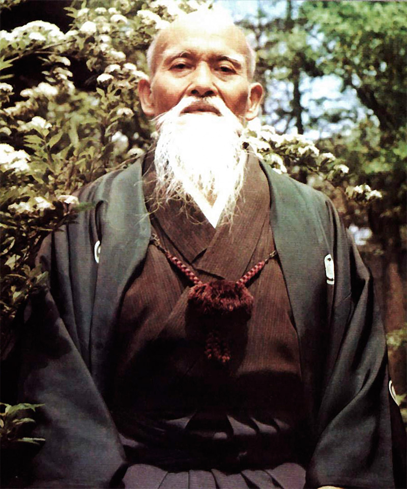
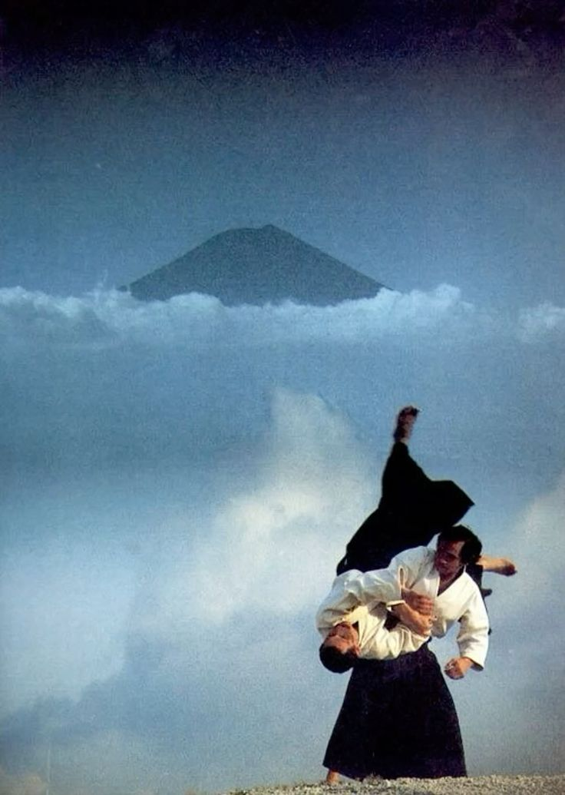
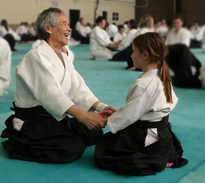

L'Aikido
Une Voie Martiale adaptée au monde moderne

L'Aikido a été créé par Morihei UESHIBA (1883-1969). Il était un guerrier hors du commun, O Sensei était également très croyant. Après des années de pratique et de recherche tant sur le plan technique que spirituel, il incarne pour tout pratiquant d'arts martiaux, celui qui transcenda les techniques meurtrières des écoles de Bujustu pour en faire des techniques de Paix et les élever au rang de Budo, véritables voies martiales.
Discipline corporelle, L'Aikido n'est pas un sport de combat. C'est une voie martiale visant au développement des qualités humaines, considérant l'individu comme un tout, vivant en harmonie avec lui-même et son environnement, en dehors de tout concept ou organisation de compétition.
Une alternative innovante à la gestion du conflit
Un système "d'auto-défense maitrisée"

L'Aikido ne rejette pas l'idée de la confrontation. Par contre, il souhaite à ce sujet résoudre toute agression éventuelle en préservant l'intégrité physique et morale de l'agresseur. La notion de contrôle au sens large, y est donc prépondérante.
Exécuter une technique à mains nues comme si nous utilisions une arme ou se mouvoir avec une arme comme si nous avions les mains nues permet d'atteindre une grande liberté d'action.
Certaines techniques d'Aikido sont notamment utilisé par la police japonaise pour interpeller et immobiliser un suspect. N'étant pas basé sur l'utilisation de la force brute, l'Aikido permettra au plus grand nombre de se défendre indépendamment de la taille, du genre ou de l'âge. Seul la maîtrise des différentes techniques composant l'Aikido fera la différence entre les pratiquants.
Un travail sur soi pour le bien d'autrui

Là où d'autres s'opposent, L'Aikidoka se doit de rechercher l'harmonie sans résister ni bloquer. Son but est de guider puis conduire la force agressive avec assurance pour la contrôler ou la projeter en absence de heurt, excluant toute contrainte disproportionnée.
Mais là où l'Aikido se différencie des autres arts martiaux, c'est qu'il intervient aussi, avec sa philosophie d'acceptation et de non-opposition, en amont d'une situation de conflit. L'Aikidoka ne cherche pas à gagner un combat, mais à rétablir un équilibre. Pour cela, il permet un développement complet de l'être tourné vers le monde et les autres.
Grâce à l'apprentissage de technique et de principes martiaux, l'Aikido vise à développer conjointement les capacités de l'individu sur les trois plans suivants :
- Physique : souplesse, disponibilité, puissance, contrôle, respiration.
- Mental : maitrise, concentration, capacité de décision, anticipation.
- Moral : bienveillance, éthique, respect de soi-même et d'autrui.
À termes, chaque pratiquant développera une technique et une attitude qui lui est propre. Pour chaque maître, il existe une manière différente d'exprimer cet art, tout en restant en cohérence avec les principes fondamentaux de l'Aikido.